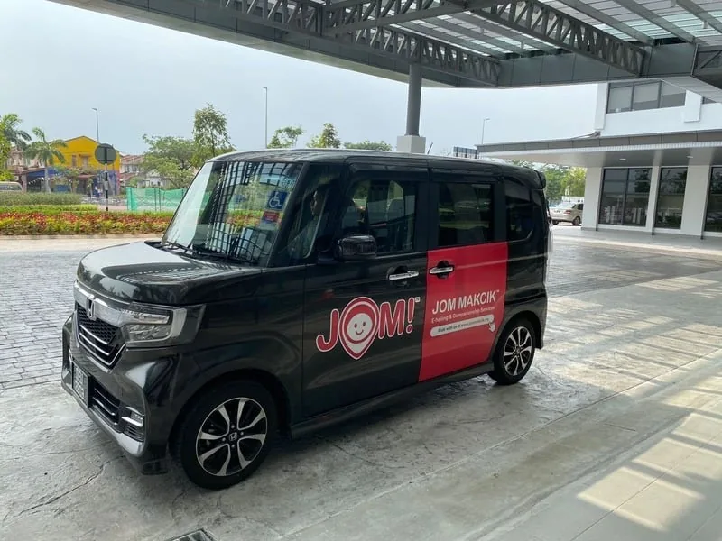
Stay in your own wheelchair. We walk you in.
Wheelchair accessible vehicles and trained women drivers for seniors, patients and persons with disabilities. Selangor, Kuala Lumpur, Putrajaya and Negeri Sembilan, weekdays, booked on WhatsApp.
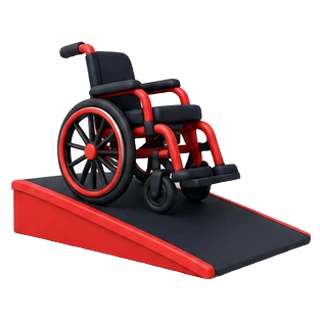
Ramp fitted, no transfer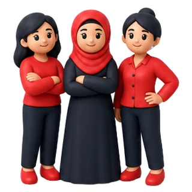
600 women drivers Trained with UTM and UiTMSource for the 68%: Yayasan Hasanah, August 2026. The other figures are our own.
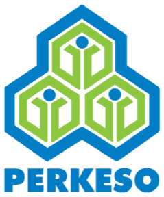
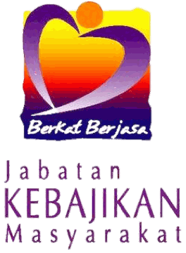
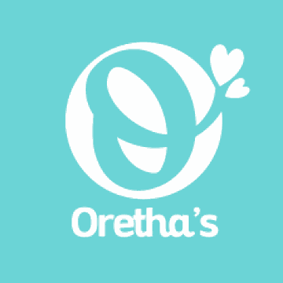
What a standard assisted ride cannot do
These limits are not our claim. They come from the service pages the big ride hailing apps publish about their own assisted rides.

Jom Makcik
A vehicle built around the chair, and a person who stays
- AbiliCar has a factory fitted ramp. You roll on and stay seated in your own wheelchair, the whole way.
- A trained chaperone walks you in, waits through the appointment, and brings you home.
- Women drivers for women, children and elders, trained with UTM and UiTM.
Roughly 600 trained women drivers in the Adinita network since 2018.
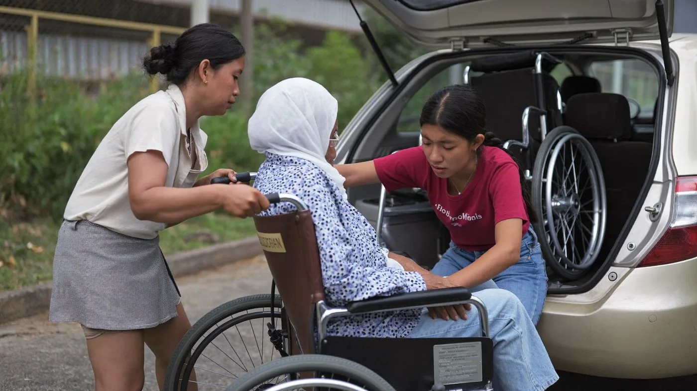
A standard assisted ride
A car with a bigger boot
- Takes a foldable wheelchair or crutches only. You must be able to get out of your chair and into a car seat.
- The driver is not permitted to leave the vehicle. If you need help to the door, you are told to arrange someone yourself.
- Nobody waits with you through the appointment.
Quoted from the published service pages of the major platform operating in Klang Valley, read September 2026.
One company across the whole journey
From the front door to the consulting room and back again. Pick the one that matches the journey, or ask us and we will tell you which you need.
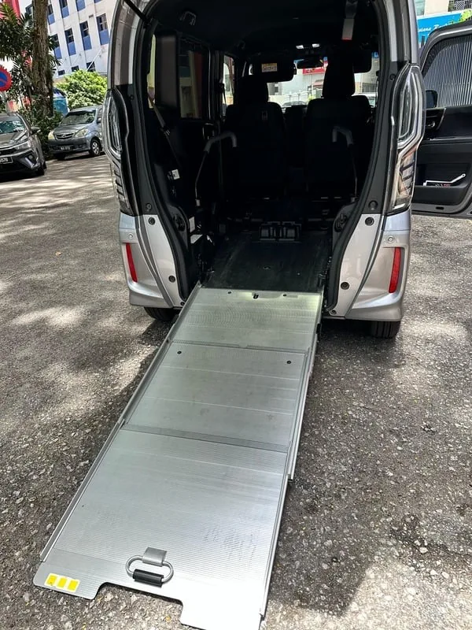
AbiliCar
A Honda N-Box with a factory fitted ramp and Japanese safety restraints, for anyone who cannot, or should not, transfer out of their wheelchair.
Book AbiliCar →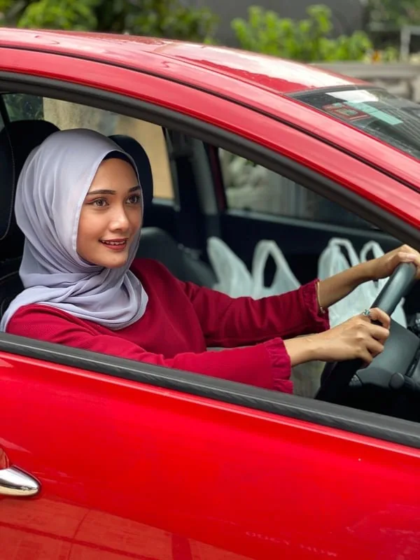
Lady Drivers
A standard car driven by a vetted, trained woman from our Adinita network, for passengers who do not need the ramp.
Book a lady driver →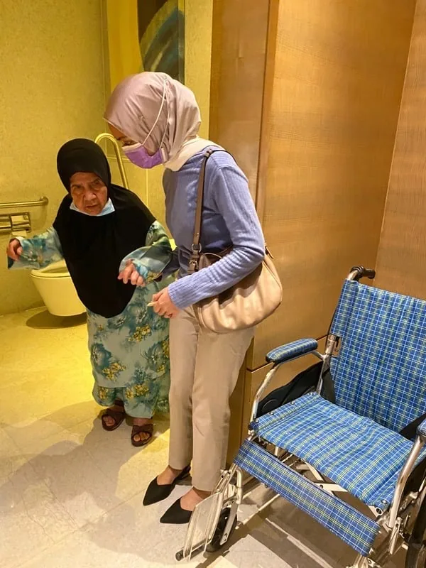
Chaperone
A trained companion collects your parent, walks them in, sits through the appointment, handles the queue and the paperwork, and brings them home.
Book a chaperone →Jom Makcik is for you if
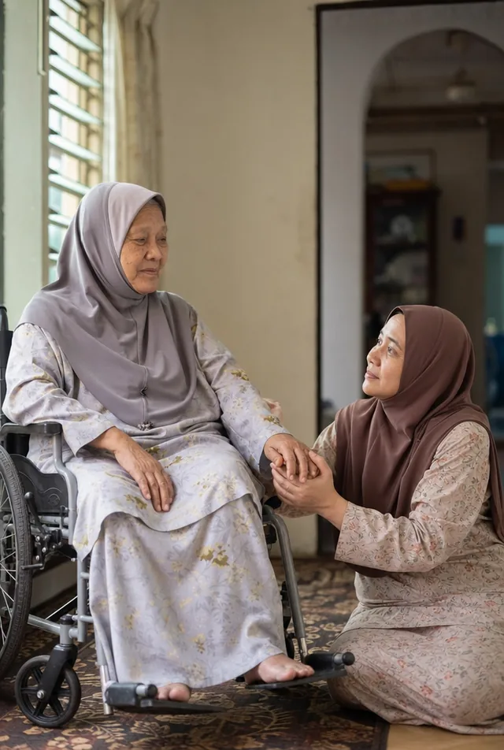
Your parent cannot get out of her wheelchair, or should not have to.
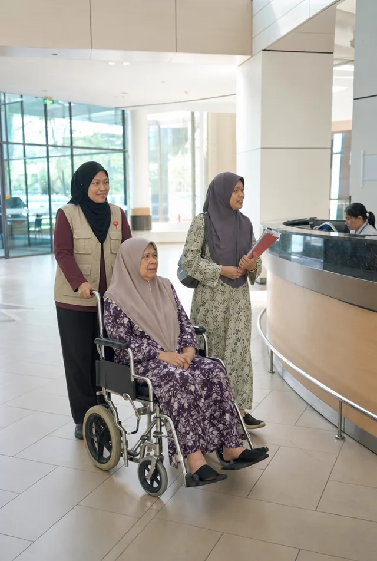
Someone has to walk her in, wait through the appointment, and bring her home.
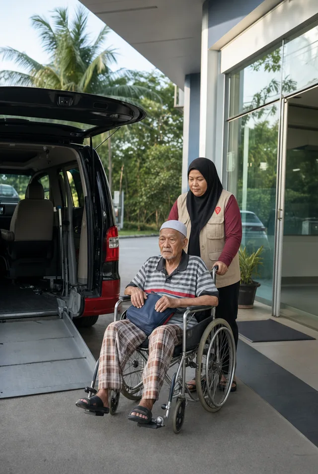
The journey repeats: dialysis, physiotherapy, a clinic every week.
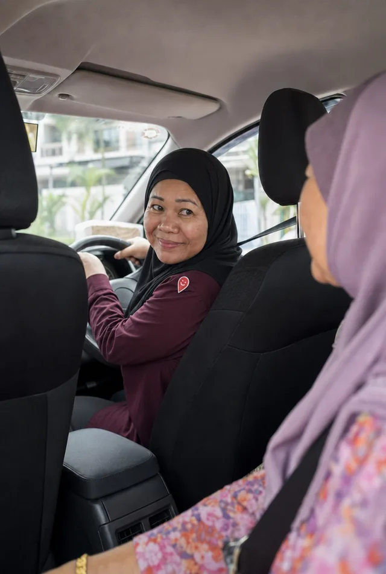
You would rather a woman at the wheel, for your mother, your daughter, or yourself.
And not for you if she walks to the car unaided and you want the cheapest ride into town. A ride hailing app will do that well, and we would rather say so.
This is what the service actually looks like
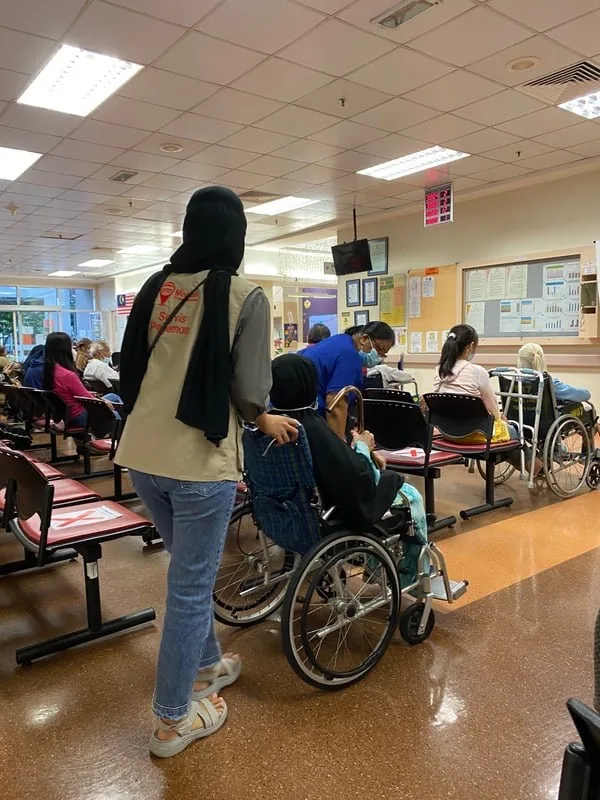
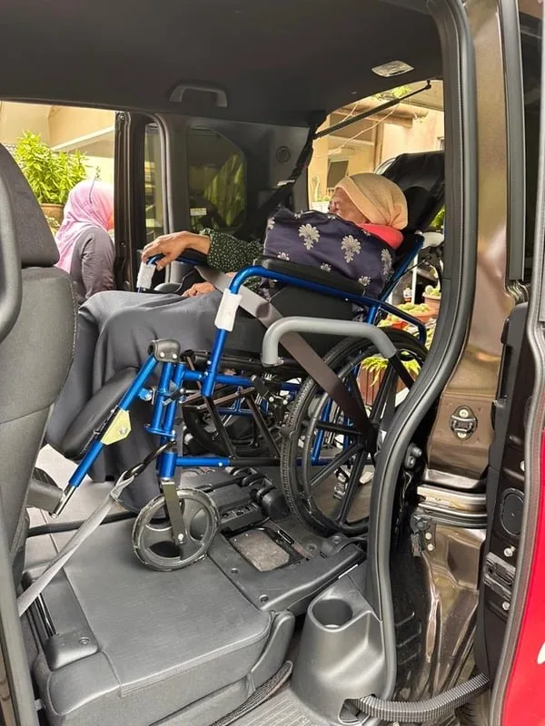
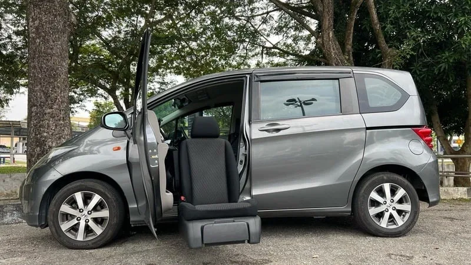
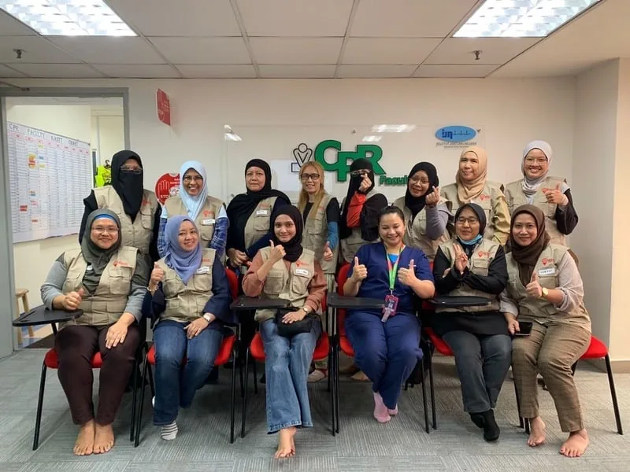
Wanita Menjaga Wanita
Women looking after women: three minutes on why Jom Makcik exists, filmed with Universiti Kebangsaan Malaysia. Jump straight to a moment, or watch the whole thing.
A written price before you book
A weekly hospital run is a cost a family plans for months, so you get the price in writing before anything is booked.
Every journey is different, so every price is quoted for yours. Message us and you get it in writing the same day.
- 01Tell us the journey on WhatsApp. Where from, where to, what date, and whether the chair folds.
- 02You get a written price the same day, before anything is booked.
- 03Confirm on WhatsApp and the ride is booked. Regular hospital runs can be billed monthly.
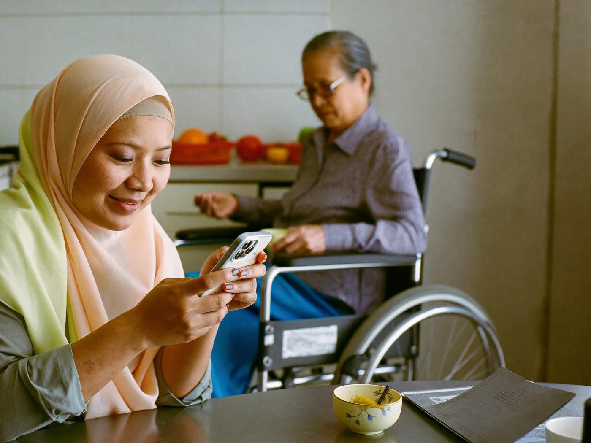
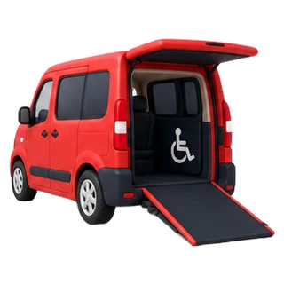
AbiliCarWheelchair accessible, one way, within the Klang ValleyOn request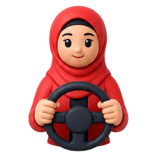
Lady DriverPer trip, one wayOn request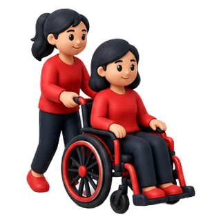
ChaperonePer appointment, including waiting timeOn request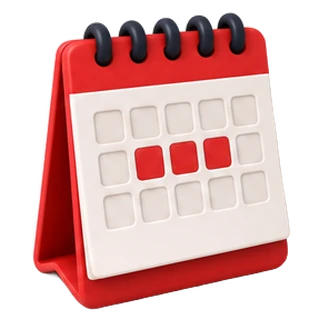
Dialysis planThree return journeys a week, billed monthlyOn request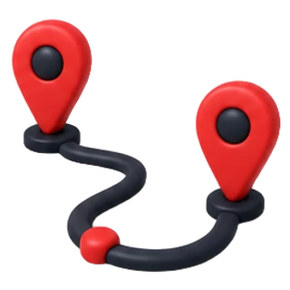
Outside these areasQuoted per journeyOn requestWhat the people who booked us wrote
Three customers, in their own words.

“I feel comfortable and safe with a lady driver. She is punctual and helped ease my chores for the day. I encourage all ladies to use this service.”

“Arranged a companion to accompany my mother as none of the family members were at home. The companion was good, arrived on time at our place, and helped with the tasks required. Overall I am happy with the service provided.”

“I used to pay up to RM3,000 a month for mobility vehicle service to go to my dialysis centre. Now I pay less than half of what I paid before. Thank you Jom Makcik.”
The photographs show the service each customer describes, not the customers themselves.
One dialysis day, and what it costs
Three return journeys a week, every week, for as long as the treatment lasts. This is one of them, from the gate to the door and back.
-
6.40am
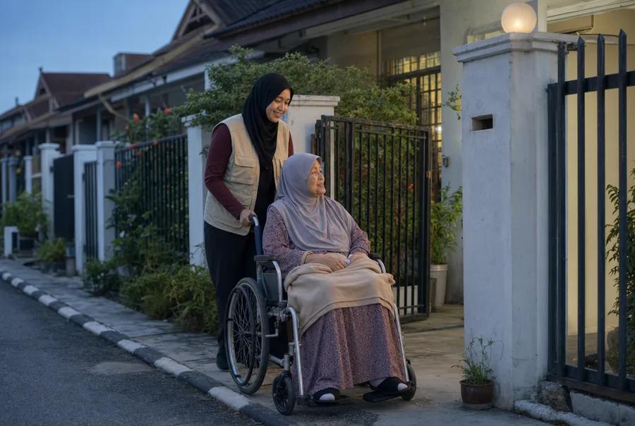
She leaves the house before the traffic.
- Collected at her own front gate
- A chaperone brings her to the van in her chair
- She stays in her own wheelchair
-
7.05am
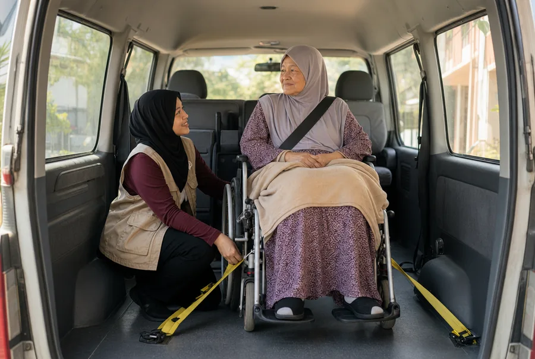
She never leaves her own chair. It is strapped to the floor.
- Rolls up a factory fitted ramp
- Chair secured with safety restraints
- A woman at the wheel
-
9.10am
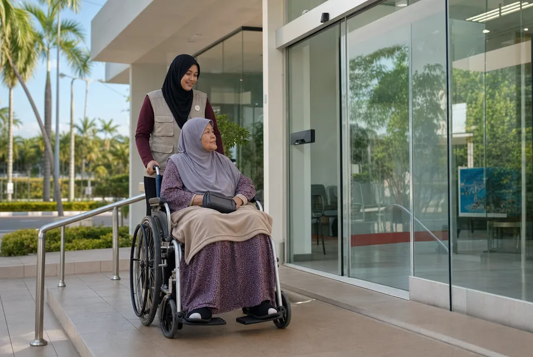
In at the door, not left at the kerb.
- Walked in to the dialysis centre
- Registration and queue handled for her
- Someone stays with her through the treatment
-
4.30pm
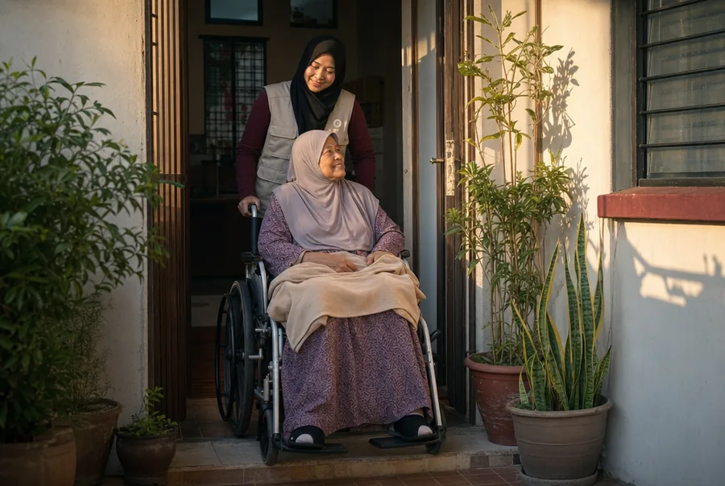
Home again, by the same person who took her.
- Wheeled right to her own door
- The same trained chaperone both ways
- Regular runs can be billed monthly
The founder and the team
“We had many patients who said, I am sorry, I cannot come to therapy.”

A lecturer in Rehabilitation Sciences at the Faculty of Health Sciences, Universiti Kebangsaan Malaysia. She started Jom Makcik in 2018 with her daughter, Siti Sarah Anuar, after watching her own patients miss the treatment they needed because nobody could get them there.
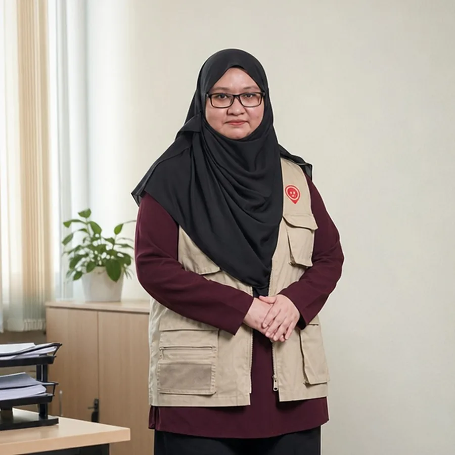


The organisations we work with
The universities, hospitals and foundations behind our training and our rides.
Malaysia's social security organisation, and one of our partners.
The Department of Social Welfare, and one of our partners.
Khazanah Nasional's impact foundation. Supports our work on senior mobility and isolation.
Funded the Senior TravelCare and Autism TravelCare training programmes.
Jom Makcik grew out of Universiti Kebangsaan Malaysia as a social enterprise, through its PEMULA start-up programme.
The Malaysian Research Institute on Ageing. Collaborated on elder care training for drivers.
Delivers the driving and entrepreneurship training our Adinita drivers complete.
One of the hospitals we carry patients to and from regularly, alongside Hospital Pakar An-Nur.
Co-delivers the driving and care training our Adinita drivers complete, with UTM.
A specialist hospital in Bangi we carry patients to and from regularly.
One of our healthcare partners.
One of our healthcare partners.
One of our ride partners.
One of our commercial partners.
The four areas we cover
- SelangorWhole state, door to door
- Kuala LumpurWhole city, door to door
- PutrajayaWhole territory, door to door
- Negeri SembilanHead office in Nilai, whole state
Travelling further? Ask us. We arrange journeys beyond these areas case by case.
Questions families ask before they book
If yours is not here, send us a WhatsApp and a real person replies, in English or Malay.
Ask on WhatsApp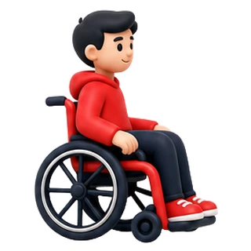
My mother cannot get out of her wheelchair. Can you still take her?
Yes. That is exactly what AbiliCar is for. The ramp comes down, she rolls on in her own chair, and the chair is secured with factory fitted restraints for the whole journey. She never has to transfer.
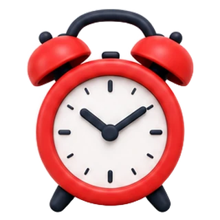
How much notice do you need?
Book at least 24 hours ahead where you can. For anything sooner, message us on WhatsApp and we will tell you honestly whether we can cover it.
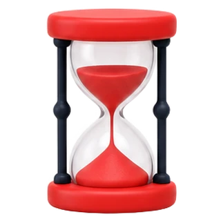
What if the appointment runs late?
We wait. Hospital appointments overrun, and nobody should be left at an entrance because a clock ran out. Tell us at booking if a long wait is likely so we can plan the driver's day around it.
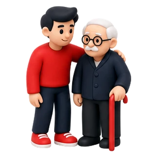
Can a family member ride along?
Yes. There is room for a companion in every vehicle, and there is no charge for one accompanying family member.
What exactly does a chaperone do?
She collects your parent from the house, helps them to the vehicle, walks them into the clinic, takes the queue number, waits through the appointment, collects the medication if needed, and brings them home. You get a message when they are back inside.
Are your drivers checked?
Yes. Adinita drivers are vetted before they join and complete driving and care training delivered with UTM and UiTM, plus programme specific training in senior and autism travel care funded by AirAsia Foundation.